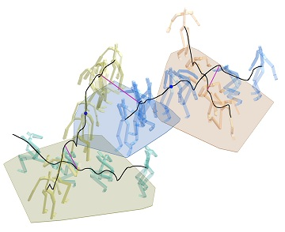
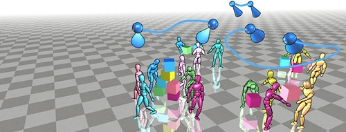
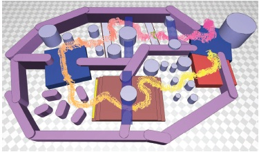
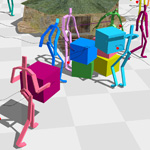
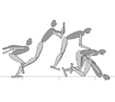

|  | Tiling Motion Patches [project page] Manmyung Kim, Youngseok Hwang, Kyunglyul Hyun, Jehee Lee, ACM SIGGRAPH/Eurographics Symposium on Computer Animation (SCA) 2012. Kyunglyul Hyun, Manmyung Kim, Youngseok Hwang, Jehee Lee, IEEE Transactions on Visualization and Computer Graphics, Nov.2013, 19(11). |
|  | Social-Event-Driven Camera Control for Multi-Character Animations [project page] I-Cheng Yeh, Wen-Chieh Lin, Tong-Yee Lee, Hsin-Ju Han, Jehee Lee, Manmyung Kim, IEEE Transactions on Visualization and Computer Graphics, 28 Oct 2011. |
|  | Deformable Motion: Squeezing into Cluttered Environments [project page] Myung Geol Choi, Manmyung Kim, Kyunglyul Hyun, Jehee Lee, Computer Graphics Forum (EUROGRAPHICS 2011), Vol. 30, No. 2. |
|  | Synchronized Multi-Character Motion Editing [project page] Manmyung Kim, Kyunglyul Hyun, Jongmin Kim, Jehee Lee, ACM Transactions on Graphics (SIGGRAPH 2009), Vol. 28, No. 3. |
|  | Simulating Biped Behaviors from Human Motion Data [project page] Kwang Won Sok, Manmyung Kim, Jehee Lee, ACM Transactions on Graphics (SIGGRAPH 2007), Vol. 28, No. 3. |